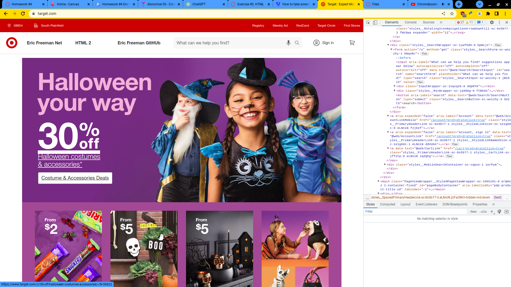

Commemoration of 9/11 in the Virtual World title
This work explores the idea of disappearance, memory, and historical erasure, specifically in the wake of 9/11.
The project encompasses multimedia installations, including digital archives, visual art, and participatory elements. It
invites viewers to engage with the concept of disappearance, not only as a physical absence but also as a societal and cultural phenomenon

Wolfgang Staehle set up cameras giving a webcast of 3 popular sites, the television tower in Berlin, The Coburg Benedictine
monastery near Stuttgart, and a panorama of the lower Manhattan skyline. This web cast was giving live image to a gallery in New York, and it unintentionally caught the attack of 9/11 on camera.
Velvet Strike is a mod of Counter Strike Go, a first person shooter video game. This mod was created after 9/11, it
gave players “protest sprays” to an already existing graffiti function. These protest sprays spreaded anti war messages. This mod questioned militaristic ideologies present in popular video games.